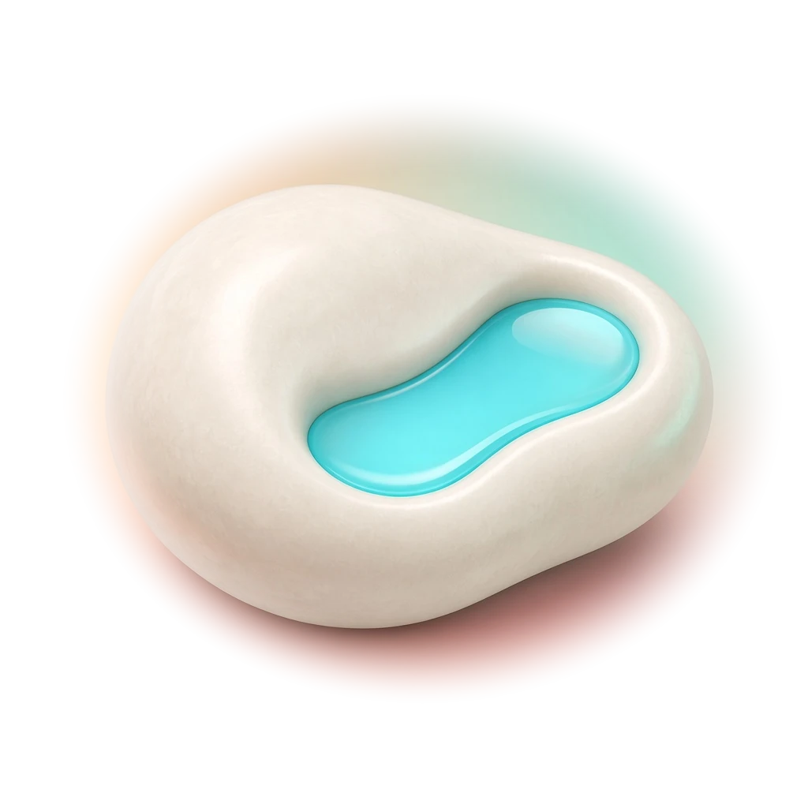
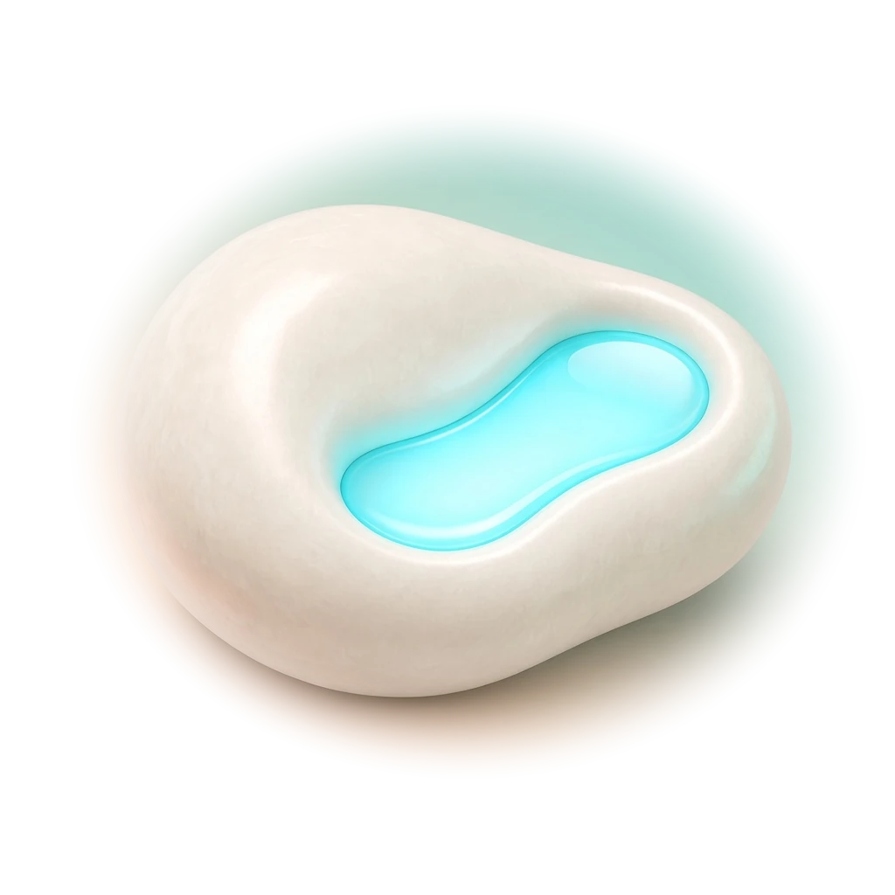

Community Netlify guide
Ask about
the platform.
A community helper for the Netlify CLI, functions, Server, and previews. Answers stay grounded in official docs. This is not an official Netlify product.
Provider checking… CLI checking… Knowledge checking… Account not linked
Cove stays current from netlify.ai and official docs, then only writes verified claims to the shareable guide.


Ask Cove
CLI, functions, Server, previews
Answers run on the machine hosting this session.